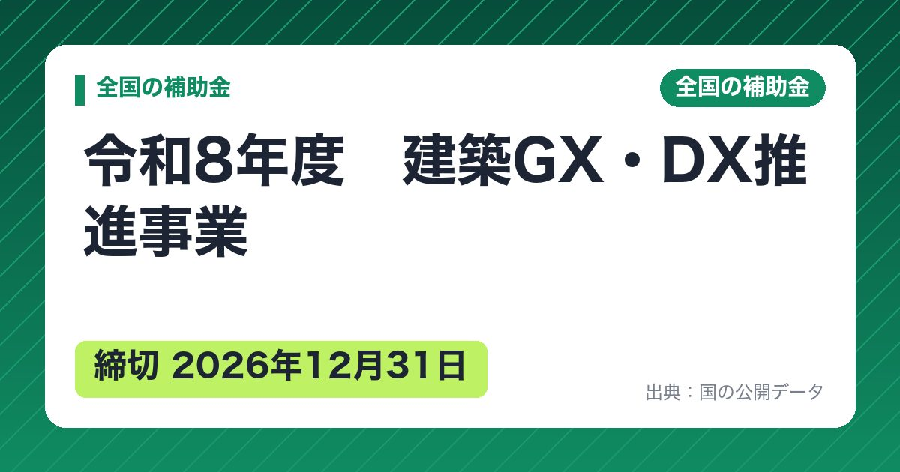

令和8年度 建築GX・DX推進事業

締切 2026年12月31日｜上限 要確認
概要
| 対象地域 | 全国 |
|---|---|
| 補助上限額 | 要確認 |
| 補助率 | 要確認 |
| 受付期間 | 2026年7月1日 〜 2026年12月31日 |
| 対象の従業員数 | 従業員数の制約なし |
| 利用目的 | 設備整備・IT導入をしたい / エコ・SDGs活動支援がほしい |
| 対象業種 | 建設業 |
| 実施機関 | 住宅・建築物カーボンニュートラル総合推進事業 |
公募の内容（原文の抜粋）
■ 概要
本補助事業は、建築物ライフサイクルカーボン評価（LCCO₂評価）の実施によるLCCO₂削減の推進（GX）と、建築業界全体の生産性向上（DX）を一体的に支援し、これらの取組を加速させることを目的としています。
一定の要件を満たす建築物を整備するプロジェクトにおいて、
・複数の事業者が連携して建築BIMデータの作成等を行う場合の設計費及び建設工事費の一部
・建築物のLCCO₂評価を行う場合のLCCO₂評価実施費用
について、国が民間事業者等に対して補助を行います。
本事業は、大規模プロジェクトに限らず、小規模プロジェクトや改修プロジェクトも対象としており、中小事業者でも活用しやすい制度となっています。また、LCCO₂評価については、設計事務所や建設会社に加え、発注者が主体となって実施する場合も支援の対象としています。
■ 問合せ先
建築GX・DX推進事業実施支援室
TEL ： 03-6803-6766
受付 ： 月～金曜日（祝日、年末年始を除く） 10:00～17:00（12:00～13:00除く）
https://gxdx.jp/
※マニュアルや様式については上記ホームページを参照ください
補助上限額については建築GX・DX推進事業 募集要領をご確認ください。
申請前の準備
- GビズIDプライム（電子申請に必須・無料・発行まで1〜2週間かかることあり）：gbiz-id.go.jp
- 直近の決算書（個人事業主は確定申告書の控え）
- 事業計画（何に使い、どう売上・生産性が上がるか）
- 見積書（買う物・頼む工事の）
IT・デジタル系の補助金は、導入するソフトと、申請に使う決算書・帳簿の準備が必要です。
広告準備に使えるサービス：
・補助金なら、パソコンとセットでお得に導入【freee会計】  （補助金を使った導入プランあり）
（補助金を使った導入プランあり）
・無料の会計自動化ソフト マネーフォワード クラウド会計  （帳簿・決算書づくりを自動化）
（帳簿・決算書づくりを自動化）
全国のほかの補助金
- 「太陽光発電導入拡大等技術開発事業」の第3回公募（締切 2026年11月25日）
- 【農林水産省】中山間地域所得確保推進事業（締切 2026年11月25日）
- 「ポスト5G情報通信システム基盤強化研究開発事業（社会課題解決に向けた量子コンピュータ次世代機開発・実証の加速）」（g12-2：部素材）の追加公募（締切 2026年11月26日）
- 【事前着手】令和8年度排出削減が困難な産業におけるエネルギー・製造プロセス転換支援事業（二次公募）（事業Ⅱ/紙パルプ・化学・セメント）（締切 2026年11月27日）
- 令和8年度排出削減が困難な産業におけるエネルギー・製造プロセス転換支援事業（二次公募）（事業Ⅱ/紙パルプ・化学・セメント）（締切 2026年11月27日）
- 令和７年度補正 ディマンドリスポンスの拡大に向けたIoT化推進事業（締切 2026年11月27日）
- 【令和８年度】二酸化炭素排出抑制対策事業費等補助金（地域再エネ水素ステーション保守点検等支援事業）（締切 2026年11月28日）
- 令和８年度二酸化炭素排出抑制対策事業費等補助金（運輸部門等の脱炭素化に向けた先進的システム社会実装促進事業のうち、農業機械の電動化促進事業）（締切 2026年11月30日）